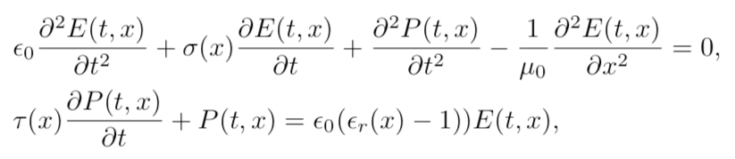
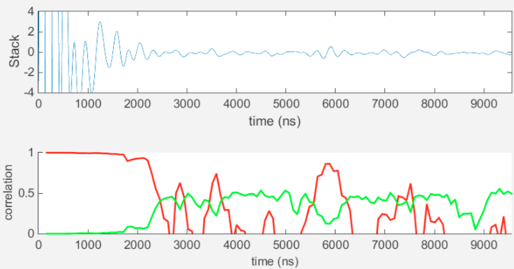
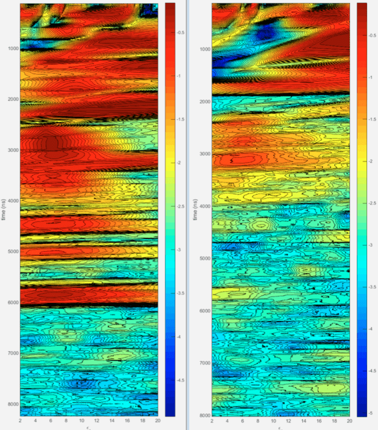
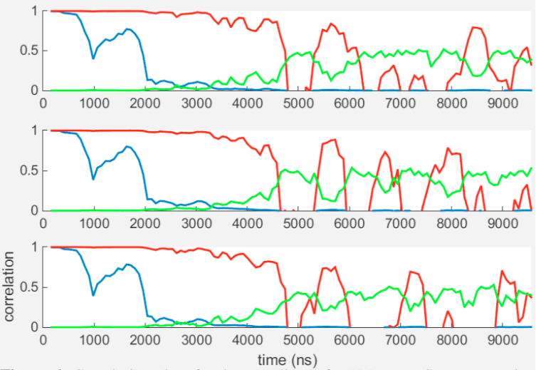
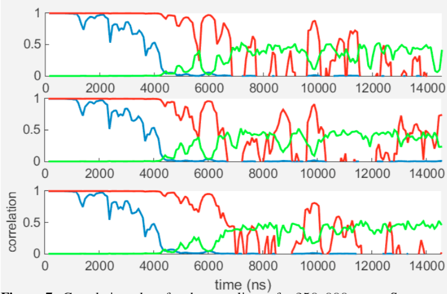

Modeling and Simulation of Low Frequency Subsurface Radar Imaging in Permafrost
- K. van den Doel - Adrok Ltd. 49-1, West Bowling Green St., Edinburgh EH6 5NX, Scotland
- G. Stove - Adrok Ltd. 49-1, West Bowling Green St., Edinburgh EH6 5NX, Scotland
Abstract
We describe simulated low frequency subsurface radar scans targeting the detection of a liquid water layer, or some other reflector such as conductive sulfides, under permafrost. A finite-difference time-domain (FDTD) and ray tracing simulation framework is used to model measurements and data analysis at depths from 350m to 800m. Operating characteristics such as pulse shape and noise levels of the measurement apparatus were obtained from an existing com- mercial radar scanning system. Results were used to test and optimize data analysis methods, predict maximum detection depth under realistic time constraints, and guide experimental design parameters such as the amount of replications required for denoising and length of the wide angle reflection and refraction (WARR) scan lines used for velocity estimation.
Keywords
Radar, Simulation, Electromagnetic, Geophysics, Imaging
1 INTRODUCTION
Applications of ground penetrating radar [1, 2] are currently mostly limited to shallow depths of a few tens of meters, because of the strong attenuation of radio waves in most subsurface materials at a typical frequency range of 20 − 1000MHz. Losses are caused by conductivity and polarization effects due to moisture content or inherent material properties. Deeper penetration up to several kilometres has been achieved with much lower frequencies (1 − 5Mhz) using very large antenna’s in resistive environments such as Martian rock, ice, and permafrost [3, 4, 5, 6]. In this article we present results of simulations of scans with a low frequency pulsed radar system through permafrost. The scenario we consider is the detection of a water rich layer at depths of 350m to 800m. Electrical properties (conductivity and Debye polarization model parameters) of limestone were measured previously in-situ by trans illumination scans through large underground pillars [7], which we use as representative for permafrost, though perhaps these values are somewhat pessimistic in terms of generated losses [8]. Material parameters were used in a one dimensional full waveform FDTD simulator similar to [9], and a two dimensional simulator based on the ray approximation to Maxwell’s equations. The radar system was modeled after the Adrok scanner [10] for which we measured the transmitted pulse shape and noise levels.
Two types of radar scans were simulated. In Stare scans transmitter and receiver are placed about 1m apart on the surface and reflections from transmitted pulses are measured repeatedly and stacked (averaged) for denoising. From the arrival times of observed returns, reflecting boundaries can be localized if the propagation velocity is known. To estimate velocity we perform a WARR [11] scan, where data is acquired with transmitter and receiver at varying distances. Using triangulation methods such as normal move out analysis or velocity spectrum analysis allows the estimation of average velocity at a specific reflection time. Velocity v is related to relative permittivity εr (referred to as “the dielectric” below) by v = c/√εr with c the speed of light in vacuum. Pulse dispersion is negligible in the frequency range under consideration so we ignore the small variations of εr with frequency. Results are used to test efficacy of data analysis methods, determine the effect of backscatter caused by irregularities in the ground, estimate how much stacking is required, and estimate maximum achievable penetration depth with the modeled system.
2 Wave propagation model
We implemented a 1 + 1 dimensional time-domain finite difference simulation of Maxwell’s equations in a medium described by dielectric εr(x), static conductivity σ(x) and a Debye polarization model [12] with relaxation time τ to account for frequency dependent losses. The model is similar to the one described in [5], except we added a polarization component. Material properties are assumed to be constant in time but can depend on location. The model is summarized by the following system of partial differential equations:
with E the electrical field, P the polarization, ε0 = 8.85 × 10−12F/m and μ0 = 4π × 10−7H/m. The equations are discretized with a fourth order finite difference approximation for the spatial derivatives and a leap-frog method for the time stepping [13]. At the simulation boundaries we use perfectly matched layers [14]. A spatial grid spacing of 10cm and a time step of 0.15ns was used and found to be accurate enough for frequencies up to 100MHz. The size of the absorbing boundaries were 400m on the top and 200m on the bottom. See Fig, 1.
This model permits the simulation of Stare scans, where transmitter and receiver are at (almost) the same position on the surface. During WARR scans we measure returns with transmitter and receiver at increasing separations, with the transmitter moving away from the receiver. For this a two dimensional simulation is required. Due to the small grid spacing necessary and the long simulation times to capture deep reflections a FDTD simulator would require very large computational resources. An interesting alternative manner to reduce computational requirements was proposed in [15] using a finite difference model in the frequency domain.
We used a ray tracing method instead. A ray emitted from the transmitter is intersected with a boundary from a layered earth model, and the ray is split into a transmitted and reflected ray using standard geometric optics methods. These two rays then hit other boundaries and are split again, leading to an exponential growth of the number of rays which we cull by tracking the amplitude attenuation due to reflection coefficients and propagation losses and dropping rays that are attenuated by more than 60dB. After all rays are computed the received returns on a line on the surface are rendered by propagating the output of the transmitter through all rays, and applying frequency dependent attenuation as obtained from the FDTD model. We also add a direct ground wave component. The procedure is illustrated in Fig, 1. Both models were calibrated on propagation and reflection through a constant dielectric medium, which can be solved in closed form, to have an error less than the noise level of the sensors.
The emitted pulse of the modeled system was measured in air as a time domain trace. It is about 200ns long and contains frequency components from 2 − 70MHz with significant peaks at 3, 20, 30, and 65MHz [7]. Noise levels (background and internal) were measured to be about 1% of the peak value of the amplitude at a distance of 1m and are added to the simulated measurements accordingly. In normal operation mode the receiver collects 500 traces which are stacked for noise reduction. Maximum acquisition rate for 20μs long traces is 10, 000 traces per minute. The sampling rate is 2.5GHz.
3 Ground models
 Figure 1. On left: Example of a simulation domain consisting of air, rock, and a reflecting water layer. The domain is padded on both sides with perfectly matched layers to eliminate unphysical reflections from the domain bounda- ries. On right: A single ray propagating in the domain. Horizontal green lines divide regions with slightly different dielectric. The ray, computed from recei- ver (Rx) to transmitter (Tx) using time-invariance, splits at each intersection. Amplitude decreases in accordance with the reflection coefficients and propa- gation losses and is indicated in color, with 1 the initial relative amplitude. Data is collected at the surface on a grid of locations. A total of 5000 rays are computed at various angles and added.
Figure 1. On left: Example of a simulation domain consisting of air, rock, and a reflecting water layer. The domain is padded on both sides with perfectly matched layers to eliminate unphysical reflections from the domain bounda- ries. On right: A single ray propagating in the domain. Horizontal green lines divide regions with slightly different dielectric. The ray, computed from recei- ver (Rx) to transmitter (Tx) using time-invariance, splits at each intersection. Amplitude decreases in accordance with the reflection coefficients and propa- gation losses and is indicated in color, with 1 the initial relative amplitude. Data is collected at the surface on a grid of locations. A total of 5000 rays are computed at various angles and added.
We consider stratified earth models with low conductivity rock down to depth D at which we assume a strongly reflecting and absorbing aquifer-like structure modeled as material with εr = 40 and conductivity σ = 0.01S/m. For the rock parameters we used the values measured in-situ using trans illumination experiments through underground limestone pillars [7]: σ = 0.075mS/m, τ = 0.4ns, εr = 6. These values are consistent with for example table 7.1 in [11]. The skin depth (distance at which the amplitude reduces by a factor e) varies from about 160m at 3MHz to 4m at 70Mhz. Small fluctuations in composition of the rock layer cause backscatter which can be detected with a WARR scan and used to estimate the dielectric. To model these irregularities, we added small random variations ∆εr in the dielectric, with a Gaussian distribution with standard deviation 0.25 (other values are also discussed below) at random depth intervals ∆x which are taken from an exponential distribution with mean 5m.
4 Simulation results
The first scenario we considered consists of a reflector at D = 350m under a randomized permafrost layer as described above. The model is depicted in Fig. 1. We first ran the FDTD simulation to determine if a reflection from the bottom, which should appear at 5716ns, is detectable using standard denoising of a Stare scan, i.e., a stack of 500 traces. Visual inspection of the raw stacked trace did not show a return, but after applying a low pass filter with a cut-off of 5MHz a faint blip could be seen. To localize such faint returns we display a “stacked correlation” plot. This is derived by splitting the collection of traces randomly into two equal sized sets (250 traces each in this case), and average (stack) both sets to obtain two time domain traces. We compute the correlation between the pair of stacked traces over time windows of 300ns, i.e., slightly larger than the pulse length. This is repeated over 100 random bisections of the stack and for each time window we compute the mean and standard deviation of the correlation. Peaks that are significantly above the standard deviation are interpreted as likely reflections. If results are ambiguous the measurement is repeated several times to account for transient noises sources which can cause spurious correlation peaks, and only the peaks in the correlation plots that occur in all measurements are deemed significant. The stacked trace and the correlation plot are depicted in Fig. 2. The peak is localized at 5800ns which translated to 355m using εr = 6, an error of 5m.
 Figure 2. Stare data of a scan of a 350m deep reflector. On top we show the stacked trace, below the stacked correlation. The peak in correlation occurs at 5800ns, or 355m. Figure 3. Simulation of a water layer at depth 350m and resulting dielectric spectrum using the raw traces (right) and using the extracted phase (left). Depicted is the logarithm of the semblance versus εr and time. WARR length was 100m.
Figure 3. Simulation of a water layer at depth 350m and resulting dielectric spectrum using the raw traces (right) and using the extracted phase (left). Depicted is the logarithm of the semblance versus εr and time. WARR length was 100m.
 Figure 4. Dielectric spectra using a WARR line of 50m (left) and a line of 200m (right) for comparison with Fig. 3.
Figure 4. Dielectric spectra using a WARR line of 50m (left) and a line of 200m (right) for comparison with Fig. 3.
Next we assumed that εr is unknown and needs to be estimated from a WARR scan. We collected traces with the separation between transmitter and receiver increasing up to 100m in 20 steps, collecting 500 traces at each separation. The data was then processed using a semblance based velocity analysis [16]. This estimation method assumes all reflections are primaries. The best time window over which to compute semblance was found by trial and error to be 260ns, close to the temporal extent of the pulse. We plot semblance versus dielectric εr , rather than velocity and refer to this as the dielectric spectrum. Visually tracking the peaks in the display allows an estimation of the mean εr (actually square of the weighted means of √εr) over time to allow depth estimation.
In Fig. 3 right pane we depict the dielectric spectrum computed directly from the raw traces. While the peaks are consistent with εr = 6 they are very broad and accuracy is low. The resolution can be improved considerably by computing semblance of the phase rather than of the raw traces. Instantaneous phase is extracted by standard methods using the Hilbert transform [17]. The phase based spectrum is depicted on the left in Fig. 3 and clearly gives much sharper values. We shall use the phase based spectrum from here on. Values are close to 6 below 1200ns, above that the ray model becomes inaccurate as the ray paths need to be longer than the wavelength which is about 40m. The reflection at the bottom has a peak at 5.85 which translates to an error of about 5m in depth estimation, similar to the error in localizing the reflection from a Stare scan (assuming εr is known a-priori) discussed earlier.
Experimenting with the number of measurements on the 100m WARR line showed improved results up to about 20 larger values did not significantly improve the results.
The length of the WARR line strongly affects the accuracy of the velocity estimation as demonstrated in Fig. 4 where we depict results for a 50m and a 200m scan line. Clearly in practice the line should be as long as is practical, but even for a short line of 50m the estimate is not far off.
We investigated the effect of the irregularities in the upper rock layer by constructing synthetic ground models with dielectric fluctuations of 0.5 and 1.0 (standard deviation) instead of 0.25. We expect additional attenuation due to more scattering from the irregularities and multiple reflections should negatively affect the efficacy of the dielectric spectrum estimation. Indeed we found that the velocity at 350m could not be determined without additional stacking to 5000 traces for the 0.5 case. For the 1.0 case no amount of stacking allowed a reading on the dielectric. An analysis of the ray paths generated by the simulation showed that the WARR measurement contains a significant amount of multiples in the latter case, which prevents the dielectric spectrum method from working properly. The randomly generated values of εr had values between 10 and 3 which causes these strong internal reflections. Such large variations in dielectric are probably unrealistic in more or less homogeneous permafrost but could perhaps occur in different environments. The dielectric spectra for the two cases are depicted in Fig.5.
 Figure 5. Dielectric spectra for rougher rock models above 350m. On the left fluctuations in εr with standard deviation 0.5, on the right 1.0. Stacking has been increased to 5000.  Figure 6. Correlation plots for three replicas of a 500 traces Stare scan using the roughest rock model with fluctuations of 1.0 in εr. The common peak is centered at 5638ns, corresponding to a depth of 345m.  Figure 7. Correlation plots for three replicas of a 250, 000 traces Stare scan with a water layer at 600m. The shared peak at 9890ns corresponds to a depth of 606m assuming εr = 6.The FDTD Stare simulation for this case (dielectric standard deviation of 1.0) however indicated that the reflection from the water layer can still be detected with the correlation plot method, even without any additional stacking. However spurious random peaks appear, which can be recognized by repeating the experiment with different random noise realizations. Results from three replicas of the Stare scan are depicted in Fig. 6.
Another set of simulations was performed with the rock model with variations of 0.25 in the dielectric with the reflector place at a depth of 600m. Due to the increased losses stacking needs to be increased in order for the signal to be detectable over the background noise. It can also be expected that the base line of the WARR scan needs to be wider. It was found that a stack of 250, 000 and a WARR line of 200m with 20 measurements on the line suffices, i.e., an increase in stacking by a factor 500.
Simulations with this amount of stacking for models with the water layer at various depths indicate that up to about 600m depth the reflection can still be detected and the velocity determined from a 200m long WARR scan. In Fig.7 we show three replicas of the correlation plots for a 250, 000 traces Stare scan above a 600m deep water layer, which show a common peak corresponding to a depth location of 606m. The dielectric spectrum is depicted in Fig. 8. A dielectric of about 6 can be read off between 2000ns and 6000ns after which the signal appears lost. Before 2000ns spurious peaks appear which are caused by multiples which are strong enough to affect the data with this amount of denoising. Zooming in on the region near the bottom reflection shows a weak peak centered around 6.
By increasing the stacking by a factor 500, the coherent reflections are amplified by a factor √500 ≈ 23, compared to the 350m simulations. The radar pulse had to travel an additional 500m through rock (two-way), which should cause an additional attenuation by a factor e500/160 ≈ 22, which is in good agreement with the simulation results.
With a scan rate of 10, 000 traces per minute the Stare scan would take 25 mins to acquire, but the WARR scan about 8 hrs, so the whole acquisition would take about one day. In practice a WARR scan may not be necessary provided the host rock is sufficiently homogeneous, or if depth calibration on a known reflector can be performed.
To detect targets beyond 600m with the current equipment would require significantly more stacking. At 800m depth the attenuation factor compared to 350m is e900/160 ≈ 3400, which could be achieved theoretically with a stack of 34002 ∗ 500 ≈ 6 · 109 which is probably impractical. In this case a hardware reduction of external noise (for example using shielding) by a factor 100 would reduce the required stack again to 500, 000, a manageable number.
 Figure 8. Simulation of a 600m deep water layer. On the left the dielectric spectrum for a 200m long WARR with a stack of 250, 000. The zoom at the right around the reflection from 600m shows a faint peak centered at the correct value of 6.
Figure 8. Simulation of a 600m deep water layer. On the left the dielectric spectrum for a 200m long WARR with a stack of 250, 000. The zoom at the right around the reflection from 600m shows a faint peak centered at the correct value of 6.
5 CONCLUSIONS
Results indicate that with the modeled equipment a water layer can be detected quickly at a depth of 350m through resistive host rock such as permafrost by detecting the arrival time of the reflection using a correlation analysis of a Stare scan and a phase based velocity spectrum analysis of a WARR scan over a 100m line. Small irregularities in dielectric of about 0.25 are beneficial for the interpretation but if these fluctuation become very large multiples interfere with dielectric estimation. Under the constraint of a one day experiment (including a WARR scan) and limitations on the scan rate, maximum exploration depth was estimated at 600m. Results from this specific scenario may be applicable to exploration in other highly resistive earth based materials such as granite, igneous rocks, and certain types of coal [11].
These results assume in-situ material parameters similar to limestone with a skin depth of about 160m at 3MHz, which may be overly pessimistic. Values of permafrost resistivity from 50kΩm up to 1MΩm have been reported in the literature [8]. At these values the skin depths would be 500m and 1500m respectively, significantly reducing the amount of stacking required.